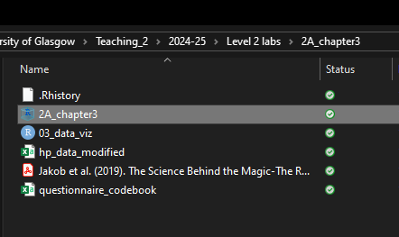
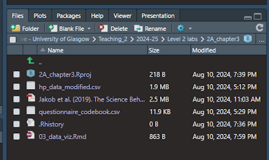
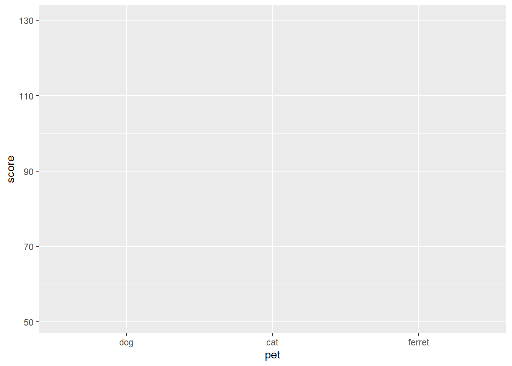
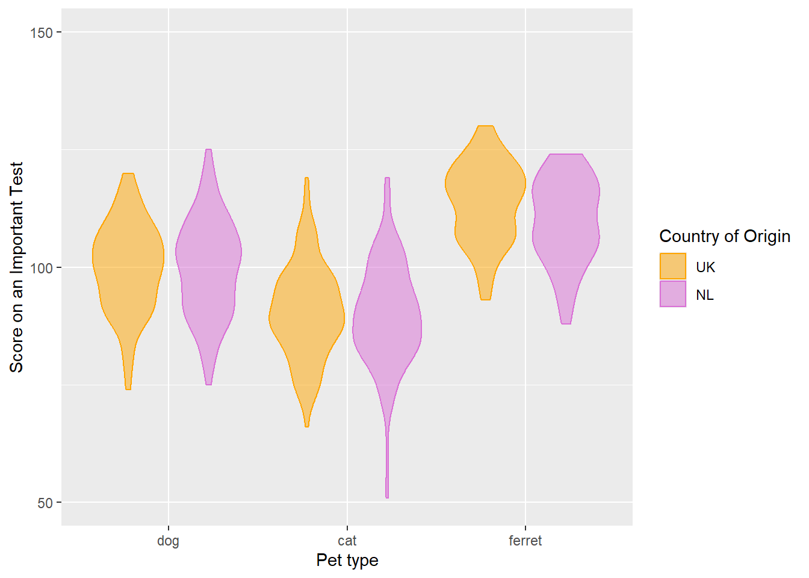
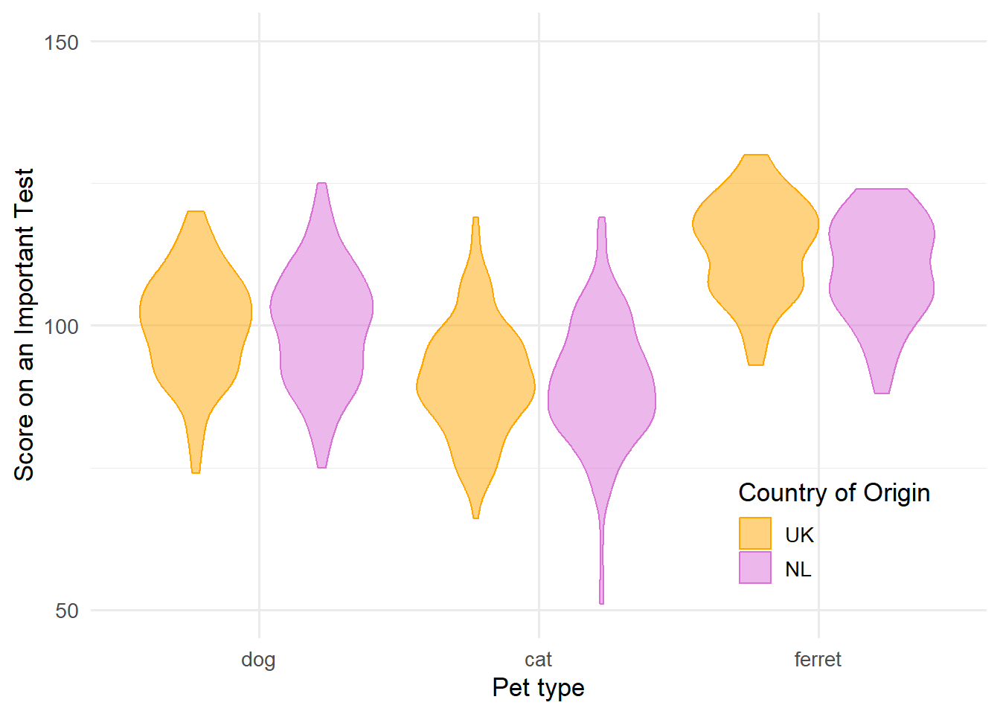

3 Data viz
Intended Learning Outcomes
By the end of this chapter you should be able to:
- a
- b
- Be able to create an appropriate for your data
3.1 Activity 1: Set-up
- Create a new project and name it something meaningful (e.g., “2A_chapter3”, or “03_data_viz”)
- Create a new Rmd and save it to your project folder. Name it something meaningful (e.g., “chapter_03”, “03_data_viz.Rmd”)
- Delete everything below line 12 (keep the set-up code chunk)
- Download the data for today: data_ch3. There are 2 csv files contained in the zip-folder you just downloaded. One is the data file (
hp_data_modified.csv) and the other is thequestionnaire_codebookfor the main 3 questionnaires used in the dataset. - Unzip the zip folder so that all data files, the Rmd and the project are in the same folder (see image below)
If you set it up correctly, your folder should look like this:


Info about the data
citation
Abstract
3.2 Activity 2: Load in the libraries and read in the data
Familiarise yourself with the data structure
Or as we said in (sec?)-, you could
As we said in chapter 1 (LINK TO THAT), it is always recommended to glimpse at the data to see how many variables and observations there are in the dataset and what kind of data type they are.
For example, to show the codebook, we would use:
Rows: 134
Columns: 5
$ Questionnaire_Item <chr> "IPIP_01", "IPIP_02", "IPIP_03", "IPI…
$ Statement <chr> "Am the life of the party.", "Feel li…
$ Dimension <chr> "Extraversion", "Agreeableness", "Con…
$ `Forward- or Reverse-coded item` <chr> "Forward", "Reverse", "Forward", "Rev…
$ Scoring <chr> "Forward:\n1 = Very inaccurate\n2 = M…hp_data. Click to see the solution.
Rows: 988
Columns: 159
$ PP_ID <dbl> 1, 2, 3, 4, 5, 6, 7, 8, 9, 10, 11, 12, 13, 14, 15…
$ books <chr> "Harry Potter and the Philosopher's Stone,Harry P…
$ language_books <chr> "English", "German and English", "Both English an…
$ movies <chr> "Harry Potter and the Philosopher's Stone,Harry P…
$ language_movies <chr> "English", "German and English", "Both English an…
$ Sorting_completed_YN <chr> "Yes", "No", "Yes", "Yes", "Yes", "Yes", "No", "Y…
$ Sorting_house <chr> "Ravenclaw", "Gryffindor", "Gryffindor", "Slyther…
$ Sorting_house_wish <chr> "Ravenclaw", "Ravenclaw", "Ravenclaw", "Slytherin…
$ age <dbl> 21, 22, 27, 21, 20, 27, 26, 29, 23, 24, 25, 33, 2…
$ country <chr> "Germany", "Germany", "France", "Norway", "Chile"…
$ language <chr> "german", "German", "French", "Norwegian", "Spani…
$ occupation <chr> "Student", "Student", "Employed", "Student", "Stu…
$ gender <chr> "Female", "Female", "Female", "Male", "Female", "…
$ Bravery <chr> "Gryffindor", "Gryffindor", "Gryffindor", "Gryffi…
$ Hardwork <chr> "Ravenclaw", "Ravenclaw", "Hufflepuff", "Hufflepu…
$ Intelligence <chr> "Ravenclaw", "Ravenclaw", "Ravenclaw", "Ravenclaw…
$ Ambition <chr> "Slytherin", "Slytherin", "Slytherin", "Slytherin…
$ Daring <chr> "Gryffindor", "Hufflepuff", "Gryffindor", "Gryffi…
$ Dedication <chr> "Ravenclaw", "Slytherin", "Hufflepuff", "Hufflepu…
$ Knowledge <chr> "Ravenclaw", "Ravenclaw", "Ravenclaw", "Ravenclaw…
$ Cunning <chr> "Slytherin", "Hufflepuff", "Slytherin", "Slytheri…
$ Extraverted <chr> "Hufflepuff", "Hufflepuff", "Hufflepuff", "Gryffi…
$ Agreeable <chr> "Hufflepuff", "Gryffindor", "Hufflepuff", "Huffle…
$ Clever <chr> "Ravenclaw", "Ravenclaw", "Ravenclaw", "Ravenclaw…
$ Manipulative <chr> "Slytherin", "Slytherin", "Slytherin", "Slytherin…
$ IPIP_01 <chr> "moderately accurate", "neither accurate nor inac…
$ IPIP_02 <chr> "very inaccurate", "moderately accurate", "very i…
$ IPIP_03 <chr> "moderately inaccurate", "very accurate", "modera…
$ IPIP_04 <chr> "moderately inaccurate", "neither accurate nor in…
$ IPIP_05 <chr> "very accurate", "moderately accurate", "very acc…
$ IPIP_06 <chr> "moderately inaccurate", "neither accurate nor in…
$ IPIP_07 <chr> "very accurate", "moderately inaccurate", "very a…
$ IPIP_08 <chr> "moderately accurate", "very inaccurate", "modera…
$ IPIP_09 <chr> "moderately accurate", "neither accurate nor inac…
$ IPIP_10 <chr> "very inaccurate", "very inaccurate", "very inacc…
$ IPIP_11 <chr> "moderately accurate", "moderately inaccurate", "…
$ IPIP_12 <chr> "very inaccurate", "moderately inaccurate", "very…
$ IPIP_13 <chr> "neither accurate nor inaccurate", "very accurate…
$ IPIP_14 <chr> "very inaccurate", "moderately accurate", "modera…
$ IPIP_15 <chr> "moderately accurate", "neither accurate nor inac…
$ IPIP_16 <chr> "neither accurate nor inaccurate", "moderately in…
$ IPIP_17 <chr> "moderately accurate", "neither accurate nor inac…
$ IPIP_18 <chr> "moderately inaccurate", "moderately inaccurate",…
$ IPIP_19 <chr> "neither accurate nor inaccurate", "moderately in…
$ IPIP_20 <chr> "moderately inaccurate", "very inaccurate", "very…
$ IPIP_21 <chr> "very inaccurate", "moderately accurate", "modera…
$ IPIP_22 <chr> "moderately inaccurate", "moderately inaccurate",…
$ IPIP_23 <chr> "very inaccurate", "moderately inaccurate", "very…
$ IPIP_24 <chr> "neither accurate nor inaccurate", "moderately in…
$ IPIP_25 <chr> "moderately accurate", "very accurate", "moderate…
$ IPIP_26 <chr> "very inaccurate", "moderately inaccurate", "mode…
$ IPIP_27 <chr> "moderately inaccurate", "moderately accurate", "…
$ IPIP_28 <chr> "moderately accurate", "moderately accurate", "ve…
$ IPIP_29 <chr> "moderately inaccurate", "moderately accurate", "…
$ IPIP_30 <chr> "very inaccurate", "moderately inaccurate", "very…
$ IPIP_31 <chr> "very inaccurate", "moderately accurate", "modera…
$ IPIP_32 <chr> "moderately inaccurate", "moderately inaccurate",…
$ IPIP_33 <chr> "moderately inaccurate", "very accurate", "modera…
$ IPIP_34 <chr> "moderately inaccurate", "moderately inaccurate",…
$ IPIP_35 <chr> "moderately accurate", "moderately accurate", "mo…
$ IPIP_36 <chr> "moderately accurate", "moderately inaccurate", "…
$ IPIP_37 <chr> "moderately accurate", "moderately accurate", "mo…
$ IPIP_38 <chr> "neither accurate nor inaccurate", "moderately in…
$ IPIP_39 <chr> "very inaccurate", "moderately inaccurate", "neit…
$ IPIP_40 <chr> "moderately accurate", "moderately accurate", "ve…
$ IPIP_41 <chr> "moderately inaccurate", "moderately accurate", "…
$ IPIP_42 <chr> "moderately accurate", "neither accurate nor inac…
$ IPIP_43 <chr> "moderately inaccurate", "moderately inaccurate",…
$ IPIP_44 <chr> "moderately inaccurate", "moderately inaccurate",…
$ IPIP_45 <chr> "very accurate", "moderately accurate", "very acc…
$ IPIP_46 <chr> "very accurate", "moderately inaccurate", "neithe…
$ IPIP_47 <chr> "moderately inaccurate", "moderately accurate", "…
$ IPIP_48 <chr> "moderately inaccurate", "moderately accurate", "…
$ IPIP_49 <chr> "moderately inaccurate", "moderately inaccurate",…
$ IPIP_50 <chr> "moderately accurate", "moderately accurate", "ve…
$ SD_M1 <dbl> 3, 4, 3, 4, 2, 3, 3, 3, 4, 2, 4, 3, 4, 4, 3, 4, 4…
$ SD_M2 <dbl> 2, 3, 2, 5, 1, 2, 1, 2, 1, 2, 2, 4, 4, 4, 4, 2, 4…
$ SD_M3 <dbl> 2, 3, 1, 4, 2, 2, 2, 3, 3, 2, 4, 1, 3, 2, 3, 3, 2…
$ SD_M4 <dbl> 2, 2, 3, 4, 3, 3, 2, 4, 2, 2, 3, 4, 4, 4, 3, 2, 2…
$ SD_M5 <dbl> 2, 2, 1, 4, 2, 2, 1, 1, 1, 1, 2, 1, 4, 3, 2, 2, 3…
$ SD_M6 <dbl> 1, 3, 1, 5, 3, 3, 3, 4, 1, 2, 3, 1, 5, 1, 4, 3, 3…
$ SD_M7 <dbl> 3, 5, 4, 5, 2, 5, 4, 4, 5, 2, 3, 1, 5, 4, 4, 5, 5…
$ SD_M8 <dbl> 1, 3, 2, 2, 3, 1, 1, 3, 1, 2, 3, 1, 2, 1, 3, 1, 2…
$ SD_M9 <dbl> 4, 4, 2, 4, 1, 4, 2, 2, 1, 3, 3, 1, 4, 5, 4, 1, 3…
$ SD_N1 <dbl> 1, 3, 4, 4, 2, 3, 2, 1, 3, 3, 1, 1, 2, 2, 4, 3, 1…
$ SD_N2 <dbl> 4, 1, 3, 3, 2, 3, 4, 4, 5, 3, 5, 5, 4, 2, 2, 5, 4…
$ SD_N3 <dbl> 3, 2, 2, 2, 2, 2, 1, 3, 1, 1, 2, 1, 3, 2, 2, 1, 5…
$ SD_N4 <dbl> 2, 2, 2, 1, 2, 2, 2, 5, 2, 1, 3, 1, 3, 1, 4, 1, 2…
$ SD_N5 <dbl> 1, 2, 2, 4, 3, 2, 1, 4, 1, 3, 2, 1, 4, 2, 2, 1, 4…
$ SD_N6 <dbl> 4, 1, 2, 4, 4, 4, 2, 5, 5, 3, 3, 1, 4, 1, 3, 4, 2…
$ SD_N7 <dbl> 1, 3, 2, 3, 1, 1, 1, 4, 1, 3, 2, 1, 2, 4, 4, 1, 3…
$ SD_N8 <dbl> 4, 3, 3, 2, 4, 3, 3, 4, 3, 4, 4, 3, 2, 2, 2, 4, 1…
$ SD_N9 <dbl> 1, 4, 2, 4, 3, 2, 3, 2, 1, 4, 4, 1, 5, 2, 3, 3, 4…
$ SD_P1 <dbl> 1, 3, 2, 2, 1, 1, 1, 1, 1, 1, 3, 1, 3, 1, 4, 2, 2…
$ SD_P2 <dbl> 2, 3, 1, 4, 3, 4, 4, 4, 2, 2, 3, 3, 2, 2, 1, 3, 2…
$ SD_P3 <dbl> 1, 2, 1, 2, 1, 1, 1, 1, 1, 1, 2, 1, 2, 1, 4, 2, 1…
$ SD_P4 <dbl> 1, 2, 3, 2, 1, 1, 1, 1, 1, 1, 2, 1, 2, 2, 3, 1, 1…
$ SD_P5 <dbl> 3, 4, 1, 4, 1, 2, 3, 4, 1, 3, 2, 1, 4, 4, 3, 1, 1…
$ SD_P6 <dbl> 3, 3, 1, 4, 1, 2, 2, 2, 1, 1, 2, 1, 3, 1, 3, 2, 1…
$ SD_P7 <dbl> 5, 5, 4, 1, 5, 5, 5, 5, 5, 2, 5, 5, 2, 5, 2, 5, 2…
$ SD_P8 <dbl> 1, 1, 3, 2, 3, 2, 1, 3, 1, 2, 1, 1, 1, 1, 3, 3, 3…
$ SD_P9 <dbl> 1, 2, 1, 3, 1, 1, 1, 1, 1, 2, 2, 1, 1, 1, 2, 2, 4…
$ PVQ_01 <dbl> 5, 5, 5, 5, 6, 6, 4, 6, 4, 4, 5, 5, 5, 6, 6, 4, 6…
$ PVQ_02 <dbl> 2, 6, 2, 4, 5, 2, 4, 4, 2, 3, 4, 4, 6, 4, 4, 6, 6…
$ PVQ_03 <dbl> 4, 6, 3, 5, 6, 4, 4, 5, 3, 4, 5, 4, 5, 3, 4, 4, 3…
$ PVQ_04 <dbl> 2, 5, 4, 3, 3, 4, 5, 6, 5, 4, 5, 5, 4, 5, 4, 3, 2…
$ PVQ_05 <dbl> 5, 5, 4, 3, 5, 5, 5, 6, 4, 5, 6, 6, 6, 5, 3, 5, 4…
$ PVQ_06 <dbl> 1, 3, 2, 5, 3, 3, 2, 2, 1, 2, 2, 3, 3, 2, 3, 4, 4…
$ PVQ_07 <dbl> 5, 5, 5, 3, 4, 5, 4, 5, 6, 4, 4, 4, 2, 5, 3, 5, 1…
$ PVQ_08 <dbl> 3, 5, 4, 4, 6, 6, 3, 6, 2, 4, 6, 6, 3, 3, 2, 6, 3…
$ PVQ_09 <dbl> 4, 4, 5, 2, 3, 4, 4, 3, 5, 3, 5, 2, 5, 3, 3, 6, 3…
$ PVQ_10 <dbl> 4, 4, 6, 2, 5, 3, 4, 6, 4, 4, 5, 4, 4, 5, 6, 3, 5…
$ PVQ_11 <dbl> 3, 6, 6, 6, 6, 6, 5, 5, 6, 5, 5, 6, 6, 6, 5, 4, 4…
$ PVQ_12 <dbl> 1, 2, 1, 6, 2, 2, 2, 1, 1, 2, 3, 4, 3, 3, 1, 5, 3…
$ PVQ_13 <dbl> 3, 5, 3, 5, 4, 4, 5, 5, 2, 3, 4, 4, 5, 5, 3, 6, 4…
$ PVQ_14 <dbl> 5, 6, 5, 5, 6, 6, 6, 6, 4, 5, 6, 6, 6, 5, 6, 5, 4…
$ PVQ_15 <dbl> 2, 3, 2, 2, 3, 4, 3, 5, 6, 4, 3, 2, 2, 2, 2, 2, 3…
$ PVQ_16 <dbl> 4, 6, 5, 6, 6, 4, 5, 6, 5, 5, 5, 6, 6, 6, 6, 5, 5…
$ PVQ_17 <dbl> 4, 6, 5, 6, 6, 4, 4, 6, 6, 5, 4, 5, 5, 6, 4, 4, 5…
$ PVQ_18 <dbl> 1, 2, 2, 3, 2, 2, 2, 4, 1, 3, 2, 1, 1, 2, 2, 2, 4…
$ PVQ_19 <dbl> 4, 4, 5, 4, 5, 6, 6, 5, 5, 3, 4, 5, 5, 6, 6, 3, 5…
$ PVQ_20 <dbl> 1, 5, 1, 6, 2, 2, 2, 4, 1, 2, 3, 4, 5, 2, 2, 5, 4…
$ PVQ_21 <dbl> 2, 3, 3, 0, 5, 4, 1, 0, 2, 4, 5, 0, 4, 1, 3, 6, 1…
$ PVQ_22 <dbl> 5, 2, 3, 2, 2, 3, 3, 5, 6, 3, 4, 3, 4, 3, 2, 3, 1…
$ PVQ_23 <dbl> 4, 5, 6, 5, 6, 5, 4, 5, 5, 5, 5, 6, 6, 6, 6, 4, 4…
$ PVQ_24 <dbl> 2, 3, 2, 5, 2, 3, 4, 5, 4, 3, 3, 4, 5, 3, 3, 3, 4…
$ PVQ_25 <dbl> 5, 5, 6, 6, 6, 6, 5, 5, 5, 5, 4, 6, 5, 5, 5, 5, 4…
$ PVQ_26 <dbl> 3, 6, 3, 6, 4, 4, 5, 2, 1, 4, 5, 5, 6, 3, 5, 6, 4…
$ PVQ_27 <dbl> 5, 6, 6, 6, 5, 5, 6, 5, 5, 5, 5, 5, 5, 6, 5, 5, 2…
$ PVQ_28 <dbl> 3, 3, 6, 3, 5, 2, 2, 4, 4, 4, 5, 3, 4, 3, 6, 3, 2…
$ PVQ_29 <dbl> 1, 4, 2, 5, 2, 2, 1, 1, 1, 2, 3, 3, 4, 4, 5, 4, 4…
$ PVQ_30 <dbl> 3, 4, 5, 3, 5, 3, 4, 5, 4, 4, 5, 4, 5, 5, 4, 4, 5…
$ PVQ_31 <dbl> 1, 3, 2, 3, 2, 4, 2, 4, 6, 2, 4, 1, 2, 2, 4, 5, 4…
$ PVQ_32 <dbl> 4, 5, 3, 5, 5, 3, 3, 5, 5, 3, 4, 5, 5, 5, 5, 5, 5…
$ PVQ_33 <dbl> 1, 2, 2, 3, 4, 3, 2, 2, 2, 2, 1, 2, 1, 3, 1, 1, 3…
$ PVQ_34 <dbl> 4, 5, 6, 4, 6, 6, 5, 6, 5, 4, 5, 6, 6, 6, 5, 5, 5…
$ PVQ_35 <dbl> 1, 5, 2, 3, 4, 2, 2, 2, 1, 4, 3, 4, 5, 3, 2, 6, 5…
$ PVQ_36 <dbl> 5, 6, 4, 5, 6, 4, 5, 3, 3, 4, 4, 5, 5, 4, 5, 5, 5…
$ PVQ_37 <dbl> 5, 5, 4, 3, 6, 5, 5, 6, 4, 5, 5, 6, 6, 6, 5, 6, 6…
$ PVQ_38 <dbl> 5, 4, 5, 2, 5, 3, 6, 4, 6, 4, 5, 4, 4, 4, 3, 5, 4…
$ PVQ_39 <dbl> 4, 5, 5, 3, 6, 5, 4, 6, 6, 4, 5, 6, 5, 6, 6, 4, 6…
$ PVQ_40 <dbl> 1, 2, 2, 3, 3, 3, 2, 4, 1, 2, 2, 1, 2, 3, 1, 1, 4…
$ PVQ_41 <dbl> 2, 2, 2, 4, 2, 3, 1, 2, 1, 2, 2, 3, 4, 4, 4, 3, 3…
$ PVQ_42 <dbl> 1, 5, 2, 2, 2, 4, 4, 3, 6, 2, 2, 1, 2, 3, 2, 5, 2…
$ PVQ_43 <dbl> 5, 5, 5, 4, 6, 5, 4, 4, 5, 4, 3, 5, 5, 5, 5, 5, 6…
$ PVQ_44 <dbl> 1, 2, 1, 4, 2, 2, 1, 1, 1, 2, 1, 1, 3, 2, 1, 4, 1…
$ PVQ_45 <dbl> 2, 3, 4, 2, 5, 6, 2, 5, 2, 4, 6, 6, 5, 3, 3, 6, 3…
$ PVQ_46 <dbl> 4, 4, 3, 3, 6, 3, 3, 2, 3, 3, 4, 1, 4, 4, 5, 2, 3…
$ PVQ_47 <dbl> 3, 4, 5, 4, 5, 5, 4, 4, 5, 5, 4, 5, 4, 4, 5, 1, 2…
$ PVQ_48 <dbl> 4, 3, 5, 6, 4, 2, 2, 4, 6, 4, 4, 5, 6, 5, 5, 4, 4…
$ PVQ_49 <dbl> 4, 5, 5, 5, 3, 3, 2, 4, 6, 4, 4, 3, 5, 5, 4, 6, 3…
$ PVQ_50 <dbl> 3, 4, 2, 3, 4, 2, 2, 3, 1, 4, 4, 3, 3, 3, 1, 6, 3…
$ PVQ_51 <dbl> 5, 2, 2, 2, 3, 3, 3, 3, 6, 3, 4, 4, 3, 4, 3, 3, 3…
$ PVQ_52 <dbl> 4, 5, 4, 5, 6, 5, 5, 6, 4, 5, 5, 6, 5, 6, 3, 6, 4…
$ PVQ_53 <dbl> 2, 3, 2, 4, 3, 3, 3, 2, 2, 3, 4, 3, 3, 2, 1, 4, 4…
$ PVQ_54 <dbl> 3, 2, 3, 2, 3, 3, 4, 5, 4, 4, 4, 3, 3, 5, 5, 2, 3…
$ PVQ_55 <dbl> 5, 5, 5, 5, 5, 6, 5, 4, 5, 5, 4, 4, 5, 5, 4, 4, 4…
$ PVQ_56 <dbl> 4, 6, 5, 6, 6, 5, 5, 6, 5, 4, 5, 6, 5, 6, 6, 5, 4…
$ PVQ_57 <dbl> 4, 6, 5, 5, 5, 4, 4, 6, 4, 4, 4, 5, 5, 4, 4, 5, 4…Here is a small data table.
| country | population | island |
|---|---|---|
| Northern Ireland | 1,895,510 | Ireland |
| Wales | 3,169,586 | Great Britain |
| Republic of Ireland | 4,937,786 | Ireland |
| Scotland | 5,466,000 | Great Britain |
| England | 56,550,138 | Great Britain |
- What geom would you use to plot the population for each of the 5 countries?
- What mapping would you use?
- What geom would you use to plot the number of countries on each island?
- What mapping would you use?
3.3 Building plots
3.3.1
There are multiple approaches to data visualisation in R; in this course we will use the popular package tidyverse collection of packages. A grammar of graphics (the “gg” in “ggplot”) is a standardised way to describe the components of a graphic.
?fig-layers displays the evolution of a simple scatterplot using this layered approach. First, the plot space is built (layer 1); the variables are specified (layer 2); the type of visualisation (known as a geom) that is desired for these variables is specified (layer 3) - in this case geom_point() is called to visualise individual data points; a second geom is added to include a line of best fit (layer 4), the axis labels are edited for readability (layer 5), and finally, a theme is applied to change the overall appearance of the plot (layer 6).
Importantly, each layer is independent and independently customisable. For example, the size, colour and position of each component can be adjusted, or one could, for example, remove the first geom (the data points) to only visualise the line of best fit, simply by removing the layer that draws the data points (?fig-remove-layer). The use of layers makes it easy to build up complex plots step-by-step, and to adapt or extend plots from existing code.
3.4 Activity 3: Wrangling the data?
Not sure that makes sense. Maybe just dive straight in with the plots
Quick recap of continuous vs categorical data types
Check in this weeks dataset
Quick quiz
3.5 data types
3.5.1 categorical
3.5.2 continuous
let them check the data type of a
library(tidyverse)
pets <- read_csv("https://psyteachr.github.io/reprores/data/pets.csv", col_types = "cffiid")
glimpse(pets)Rows: 800
Columns: 6
$ id <chr> "S001", "S002", "S003", "S004", "S005", "S006", "S007", "S008"…
$ pet <fct> dog, dog, dog, dog, dog, dog, dog, dog, dog, dog, dog, dog, do…
$ country <fct> UK, UK, UK, UK, UK, UK, UK, UK, UK, UK, UK, UK, UK, UK, UK, UK…
$ score <int> 90, 107, 94, 120, 111, 110, 100, 107, 106, 109, 85, 110, 102, …
$ age <int> 6, 8, 2, 10, 4, 8, 9, 8, 6, 11, 5, 9, 1, 10, 7, 8, 1, 8, 5, 13…
$ weight <dbl> 19.78932, 20.01422, 19.14863, 19.56953, 21.39259, 21.31880, 19…Layers https://intro2r.com/the-start-of-the-end.html
Picture of the layers https://rpubs.com/deisdataservices/ggplot2
Let’s start with a totally empty plot layer created by the ggplot() function with no arguments.
The first argument to ggplot() is the data table you want to plot. Let’s use the pets data we loaded above. The second argument is the mapping for which columns in your data table correspond to which properties of the plot, such as the x-axis, the y-axis, line colour or linetype, point shape, or object fill. These mappings are specified by the aes() function. Just adding this to the ggplot function creates the labels and ranges for the x and y axes. They usually have sensible default values, given your data, but we’ll learn how to change them later.

People usually omit the argument names and just put the aes() function directly as the second argument to ggplot. They also usually omit x and y as argument names to aes() (but you have to name the other properties).
Next we can add “geoms”, or plot styles. You literally add them with the + symbol. You can customise the appearance of a geom with arguments like alpha (sets transparency).
The scale_* functions help you to customise the aesthetics.
Further customise the image by setting the y-axis breaks and limits, and editing the labels.
ggplot(pets, aes(pet, score, colour = country, fill = country)) +
geom_violin(alpha = 0.5) +
scale_fill_manual(values = c("orange", "orchid")) +
scale_colour_manual(values = c("orange", "orchid")) +
scale_y_continuous(breaks = c(50, 100, 150)) +
coord_cartesian(ylim = c(50, 150)) +
labs(x = "Pet type",
y = "Score on an Important Test",
colour = "Country of Origin",
fill = "Country of Origin")
Finally, change the theme and base font size and customise the legend position.
ggplot(pets, aes(pet, score, colour = country, fill = country)) +
geom_violin(alpha = 0.5) +
scale_fill_manual(values = c("orange", "orchid")) +
scale_colour_manual(values = c("orange", "orchid")) +
scale_y_continuous(breaks = c(50, 100, 150)) +
coord_cartesian(ylim = c(50, 150)) +
labs(x = "Pet type",
y = "Score on an Important Test",
colour = "Country of Origin",
fill = "Country of Origin") +
theme_minimal(base_size = 13) +
theme(legend.position = c(.83, .17))Warning: A numeric `legend.position` argument in `theme()` was deprecated in ggplot2
3.5.0.
ℹ Please use the `legend.position.inside` argument of `theme()` instead.
3.6 Which plot shall I build???
3.6.1 One catergorical variable
Bargraphs - from raw data
geom bar
use geom col if something has already been summmarised for you
bring in layers/tabs of how to change colour etc
3.6.2 Two categorical variables
faceted bargraph
3.6.3 One continuous variable
histogram
3.6.4 One continuous and one categorical grouping variable
Have one with char and one with numbers factors are important
dodged histogram or better facet
violin plot
boxplot
violin-boxplot
For ordinal rating scale: overplotting with geom_point. Use geom_jitter instead - tab you can also change the size of the dot and the transparency
3.6.5 Two continuous
scatterplot
trendlines straight line vs loess
show them next to each other like Lisa has
lm_plot <-
ggplot(survey_data, aes(x = wait_time, y = call_time)) +
geom_point(alpha = 0.2) +
geom_smooth(method = lm, formula = y~x) +
ggtitle("method = lm")
loess_plot <-
ggplot(survey_data, aes(x = wait_time, y = call_time)) +
geom_point(alpha = 0.2) +
geom_smooth(method = loess, formula = y~x) +
ggtitle("method = loess")
lm_plot + loess_plot